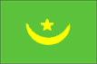

{kind=link}


![[Country map of Mauritania]](../maps/mr-map.jpg)
| Mauritania |  |
|
| | |
| Introduction |
Background: Independent from France in 1960, Mauritania annexed the southern third of the former Spanish Sahara (now Western Sahara) in 1976, but relinquished it after three years of raids by the Polisario guerrilla front seeking independence for the territory. Opposition parties were legalized and a new constitution approved in 1991. Two multiparty presidential elections since then were widely seen as being flawed; Mauritania remains, in reality, a one-party state. The country continues to experience ethnic tensions between its black minority population and the dominant Maur (Arab-Berber) populace.
| Geography |
Location: Northern Africa, bordering the North Atlantic Ocean, between Senegal and Western Sahara
Geographic coordinates: 20 00 N, 12 00 W
Map references: Africa
Area:
total:
1,030,700 sq km
land:
1,030,400 sq km
water:
300 sq km
Area - comparative: slightly larger than three times the size of New Mexico
Land boundaries:
total:
5,074 km
border countries:
Algeria 463 km, Mali 2,237 km, Senegal 813 km, Western Sahara 1,561 km
Coastline: 754 km
Maritime claims:
contiguous zone:
24 nm
continental shelf:
200 nm or to the edge of the continental margin
exclusive economic zone:
200 nm
territorial sea:
12 nm
Climate: desert; constantly hot, dry, dusty
Terrain: mostly barren, flat plains of the Sahara; some central hills
Elevation extremes:
lowest point:
Sebkha de Ndrhamcha -3 m
highest point:
Kediet Ijill 910 m
Natural resources: iron ore, gypsum, fish, copper, phosphate
Land use:
arable land:
0%
permanent crops:
0%
permanent pastures:
38%
forests and woodland:
4%
other:
58% (1993 est.)
Irrigated land: 490 sq km (1993 est.)
Natural hazards: hot, dry, dust/sand-laden sirocco wind blows primarily in March and April; periodic droughts
Environment - current issues: overgrazing, deforestation, and soil erosion aggravated by drought are contributing to desertification; very limited natural fresh water resources away from the Senegal which is the only perennial river
Environment - international agreements:
party to:
Biodiversity, Climate Change, Desertification, Endangered Species, Hazardous Wastes, Law of the Sea, Nuclear Test Ban, Ozone Layer Protection, Ship Pollution, Wetlands
signed, but not ratified:
none of the selected agreements
Geography - note: most of the population concentrated in the cities of Nouakchott and Nouadhibou and along the Senegal River in the southern part of the country
| People |
Population: 2,667,859 (July 2000 est.)
Age structure:
0-14 years:
46% (male 617,077; female 614,961)
15-64 years:
52% (male 677,238; female 697,524)
65 years and over:
2% (male 25,417; female 35,642) (2000 est.)
Population growth rate: 2.94% (2000 est.)
Birth rate: 43.36 births/1,000 population (2000 est.)
Death rate: 13.97 deaths/1,000 population (2000 est.)
Net migration rate: 0 migrant(s)/1,000 population (2000 est.)
Sex ratio:
at birth:
1.03 male(s)/female
under 15 years:
1 male(s)/female
15-64 years:
0.97 male(s)/female
65 years and over:
0.71 male(s)/female
total population:
0.98 male(s)/female (2000 est.)
Infant mortality rate: 78.15 deaths/1,000 live births (2000 est.)
Life expectancy at birth:
total population:
50.76 years
male:
48.7 years
female:
52.87 years (2000 est.)
Total fertility rate: 6.29 children born/woman (2000 est.)
Nationality:
noun:
Mauritanian(s)
adjective:
Mauritanian
Ethnic groups: mixed Maur/black 40%, Maur 30%, black 30%
Religions: Muslim 100%
Languages: Hasaniya Arabic (official), Pular, Soninke, Wolof (official), French
Literacy:
definition:
age 15 and over can read and write
total population:
37.7%
male:
49.6%
female:
26.3% (1995 est.)
| Government |
Country name:
conventional long form:
Islamic Republic of Mauritania
conventional short form:
Mauritania
local long form:
Al Jumhuriyah al Islamiyah al Muritaniyah
local short form:
Muritaniyah
Data code: MR
Government type: republic
Capital: Nouakchott
Administrative divisions: 12 regions (regions, singular - region) and 1 capital district*; Adrar, Assaba, Brakna, Dakhlet Nouadhibou, Gorgol, Guidimaka, Hodh Ech Chargui, Hodh El Gharbi, Inchiri, Nouakchott*, Tagant, Tiris Zemmour, Trarza
Independence: 28 November 1960 (from France)
National holiday: Independence Day, 28 November (1960)
Constitution: 12 July 1991
Legal system: a combination of Shari'a (Islamic law) and French civil law
Suffrage: 18 years of age; universal
Executive branch:
chief of state:
President Col. Maaouya Ould Sid Ahmed TAYA (since 12 December 1984)
head of government:
Prime Minister Cheikel Afia Ould Mohamed KHOUNA (since 16 November 1998)
cabinet:
Council of Ministers
elections:
president elected by popular vote for a six-year term; election last held 12 December 1997 (next to be held NA December 2003); prime minister appointed by the president
election results:
President Col. Maaouya Ould Sid Ahmed TAYA reelected with 90.9% of the vote
Legislative branch:
bicameral legislature consists of the Senate or Majlis al-Shuyukh (56 seats; 17 up for election every two years; members elected by municipal leaders to serve six-year terms) and the National Assembly or Majlis al-Watani (79 seats; members elected by popular vote to serve five-year terms)
elections:
Senate - last held 17 April 1998 (next to be held NA 2001); National Assembly - last held 11 and 18 October 1996 (next to be held NA 2001)
election results:
Senate - percent of vote by party - NA; seats by party - NA; National Assembly - percent of vote by party - NA; seats by party - PRDS 71, AC 1, independents and other 7
Judicial branch: three-tier system: lower, appeals, and Supreme Court (Cour Supreme)
Political parties and leaders:
Action for Change or AC [Messoud Ould BOULKHEIR]; Assembly for Democracy and Unity or RDU [Ahmed Ould SIDI BABA]; Democratic and Social Republican Party or PRDS (ruling party) [President Col. Maaouya Ould Sid Ahmed TAYA]; National Avant-Garde Party or PAN [Khattry Ould JIDDOU]; Popular Social and Democratic Union or UPSD [Mohamed Mahmoud Ould MAH]; Union of Democratic Forces-New Era or UFD/NE [Ahmed Ould DADDAH]
note:
parties legalized by constitution passed 12 July 1991, however, politics continue to be tribally based
Political pressure groups and leaders: General Confederation of Mauritanian Workers or CGTM [Abdallahi Ould MOHAMED, secretary general]; Mauritanian Workers Union or UTM [Mohamed Ely Ould BRAHIM, secretary general]; B'athists; Arab nationalists; Islamists
International organization participation: ABEDA, ACCT (associate), ACP, AfDB, AFESD, AL, AMF, AMU, CAEU, CCC, ECA, ECOWAS, FAO, G-77, IBRD, ICAO, ICRM, IDA, IDB, IFAD, IFC, IFRCS, IHO (pending member), ILO, IMF, IMO, Intelsat, Interpol, IOC, ITU, NAM, OAU, OIC, OPCW, UN, UNCTAD, UNESCO, UNIDO, UPU, WHO, WIPO, WMO, WToO, WTrO
Diplomatic representation in the US:
chief of mission:
Ambassador Ahmed Ben Khalifa BEN JIDDOU
chancery:
2129 Leroy Place NW, Washington, DC 20008
telephone:
[1] (202) 232-5700
FAX:
[1] (202) 319-2623
Diplomatic representation from the US:
chief of mission:
Ambassador Timberlake FOSTER
embassy:
Rue Abdallahi Ould Oubeid, Nouakchott
mailing address:
B. P. 222, Nouakchott
telephone:
[222] (2) 526-60, 526-63
FAX:
[222] (2) 515-92
Flag description: green with a yellow five-pointed star above a yellow, horizontal crescent; the closed side of the crescent is down; the crescent, star, and color green are traditional symbols of Islam
| Economy |
Economy - overview: A majority of the population still depends on agriculture and livestock for a livelihood, even though most of the nomads and many subsistence farmers were forced into the cities by recurrent droughts in the 1970s and 1980s. Mauritania has extensive deposits of iron ore, which account for almost 50% of total exports. The decline in world demand for this ore, however, has led to cutbacks in production. The nation's coastal waters are among the richest fishing areas in the world, but overexploitation by foreigners threatens this key source of revenue. The country's first deepwater port opened near Nouakchott in 1986. In recent years, drought and economic mismanagement have resulted in a buildup of foreign debt. In March 1999, the government signed an agreement with a joint World Bank-IMF mission on a $54 million enhanced structural adjustment facility (ESAF). The economic objectives have been set for 1999-2002. Privatization remains one of the key issues. Mauritania is unlikely to meet ESAF's annual GDP growth objectives of 4%-5%.
GDP: purchasing power parity - $4.9 billion (1999 est.)
GDP - real growth rate: 3.7% (1999 est.)
GDP - per capita: purchasing power parity - $1,910 (1999 est.)
GDP - composition by sector:
agriculture:
25%
industry:
31%
services:
44% (1997)
Population below poverty line: 57% (1990 est.)
Household income or consumption by percentage share:
lowest 10%:
0.7%
highest 10%:
30.4% (1988)
Inflation rate (consumer prices): 9.8% (1998)
Labor force: 465,000 (1981 est.); 45,000 wage earners (1980)
Labor force - by occupation: agriculture 47%, services 39%, industry 14%
Unemployment rate: 23% (1995 est.)
Budget:
revenues:
$329 million
expenditures:
$265 million, including capital expenditures of $75 million (1996 est.)
Industries: fish processing, mining of iron ore and gypsum
Industrial production growth rate: 7.2% (1994)
Electricity - production: 152 million kWh (1998)
Electricity - production by source:
fossil fuel:
80.26%
hydro:
19.74%
nuclear:
0%
other:
0% (1998)
Electricity - consumption: 141 million kWh (1998)
Electricity - exports: 0 kWh (1998)
Electricity - imports: 0 kWh (1998)
Agriculture - products: dates, millet, sorghum, root crops; cattle, sheep; fish products
Exports: $425 million (f.o.b., 1997)
Exports - commodities: fish and fish products, iron ore, gold
Exports - partners: Japan 24%, Italy 17%, France 14%, Spain 8% (1997)
Imports: $444 million (f.o.b., 1997)
Imports - commodities: machinery and equipment, petroleum products, capital goods, foodstuffs, consumer goods
Imports - partners: France 26%, Spain 8%, Germany 7%, Benelux 7% (1997)
Debt - external: $2.5 billion (1997)
Economic aid - recipient: $227.9 million (1995)
Currency: 1 ouguiya (UM) = 5 khoums
Exchange rates: ouguiyas (UM) per US$1 - 219.560 (December 1999), 209.514 (1999), 188.476 (1998), 151.853 (1997), 137.222 (1996), 129.768 (1995)
Fiscal year: calendar year
| Communications |
Telephones - main lines in use: 9,000 (1995)
Telephones - mobile cellular: 0 (1995)
Telephone system:
poor system of cable and open-wire lines, minor microwave radio relay links, and radiotelephone communications stations (improvements being made)
domestic:
mostly cable and open-wire lines; a recently completed domestic satellite telecommunications system links Nouakchott with regional capitals
international:
satellite earth stations - 1 Intelsat (Atlantic Ocean) and 2 Arabsat
Radio broadcast stations: AM 1, FM 2, shortwave 1 (1998)
Radios: 360,000 (1997)
Television broadcast stations: 1 (1997)
Televisions: 62,000 (1997)
Internet Service Providers (ISPs): NA
| Transportation |
Railways:
total:
704 km (single track); note - owned and operated by government mining company
standard gauge:
704 km 1.435-m gauge (1995)
Highways:
total:
7,660 km
paved:
866 km
unpaved:
6,794 km (1996 est.)
Waterways: mostly ferry traffic on the Senegal River
Ports and harbors: Bogue, Kaedi, Nouadhibou, Nouakchott, Rosso
Merchant marine: none (1999 est.)
Airports: 26 (1999 est.)
Airports - with paved runways:
total:
8
2,438 to 3,047 m:
3
1,524 to 2,437 m:
4
914 to 1,523 m:
1 (1999 est.)
Airports - with unpaved runways:
total:
18
2,438 to 3,047 m:
2
1,524 to 2,437 m:
5
914 to 1,523 m:
9
under 914 m:
2 (1999 est.)
| Military |
Military branches: Army, Navy, Air Force, National Gendarmerie, National Guard, National Police, Presidential Guard
Military manpower - availability:
males age 15-49:
605,124 (2000 est.)
Military manpower - fit for military service:
males age 15-49:
293,445 (2000 est.)
Military expenditures - dollar figure: $41 million (FY97)
Military expenditures - percent of GDP: 2.7% (FY97)
| Transnational Issues |
Disputes - international: none